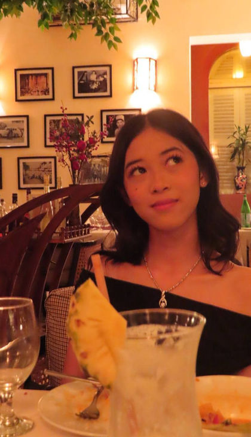

Bunnak Soena
Greetings Delegates!
My name is Soena Bunnak, and I am currently a junior at CIACA. It is my honor to serve as your Head Chair for this iteration of AUPPHSFAMUN. Model United Nations has always been a memorable and engaging experience for me, and I hope to share that sentiment through UNESCO.
UNESCO, otherwise known as The United Nations Educational, Scientific and Cultural Organization, is a committee focused on fostering world peace and security through the fields of education, science, and culture.
I look forward to seeing how delegates will tackle international cooperation in the sciences and communication, as well as your fruitful debates and engaging discussions in this committee.
Don’t hesitate to contact me if you have any questions!
Best of luck, and I can’t wait to meet you!
My email is: bunnakso.ena@gmail.com